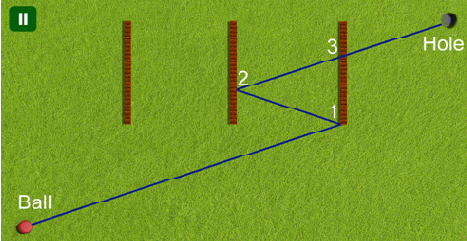

Janine recently went to her local game store and bought “Hole in One”, a new mini-golf game for her computer. As indicated by the name, the objective of the game is to shoot a ball into a hole using just one shot. The game also borrows elements from brick breaker style games: in the playing field, several walls are placed that will be destroyed upon being hit by the ball. The score of a successful shot depends on the number of destroyed walls, so Janine wonders: what is the maximum number of walls that can be hit while performing a “Hole in One”?
For the purposes of this problem you can think of the playing field as a cartesian plane with the initial position of the ball at the origin. The walls are non-intersecting axis-parallel line segments in this plane (i.e., parallel to either the x axis or the y axis). The diameter of the ball is negligible so it is represented as a single point.
Figure 1: Illustration of the first sample input: The ball first bounces off two walls at points 1 and 2. When it passes point 3 the wall has already vanished.
Whenever the ball hits a wall, two things happen:
The direction of the ball changes in the usual way: the angle of incidence equals the angle of reflection.
The wall that the ball touched is destroyed. Following common video game logic, no rubble of the wall remains; it will be as though it vanished.
The behaviour of the ball is also affected by the power of the shot. In particular, an optimal shot may need to first roll over the hole, then hit some more walls, and only later drop into the hole.
The input consists of:
one line with one integer n (0≤n≤8), the number of walls;
one line with two integers x and y, the coordinates of the hole;
nn lines each with four integers x1, y1, x2, and y2 (either x1=x2, or y1=y2, but not both), representing a wall with end points (x1,y1) and (x2,y2).
The hole is not at the origin and not on a wall. The walls do not touch or intersect each other. No wall lies completely on the x axis or the y axis. All coordinates in the input are integers with absolute value at most 1000.
If there is no way to shoot the ball such that it reaches the hole, print “impossible”. Otherwise, print the maximum number of walls that can be destroyed in a single “Hole in One” shot.
珍妮最近去当地的游戏商店买了“一杆进洞”，一个新的迷你高尔夫电脑游戏。正如名称所示，这个游戏的目标是，将球只用一击击进洞里。游戏还借鉴了打砖块风格的游戏元素：在场上，放置了一些墙，它们被球击中就会被摧毁。一个成功的击球的得分取决于破坏墙的数量，所以珍妮不禁要问：在一次“一杆进洞”中能够摧毁的最多的墙数量是多少？
对于这个问题的意向，你可以认为，比赛场地为笛卡尔坐标平面，球的最初位置在原点。墙壁为在该平面中互不相交且与坐标轴平行的线段（即平行于x轴或y轴）。球的直径非常小以至于把它当成一个点。
图1：第一个样例输入的插图：球首先经过1,2号点，并在3号点时穿过了被摧毁的墙。

每当球碰到一堵墙，会发生：
球的方向以通常的方式改变：入射角等于反射角。
被球触碰的墙被破坏。 游戏逻辑规定，没有墙的废墟存在，认为它消失了。
球的行为也受到击球的力影响。特别的是，最佳的击球可能需要将鼠标放在洞上，然后摧毁一些墙壁，并且只是延迟入洞。